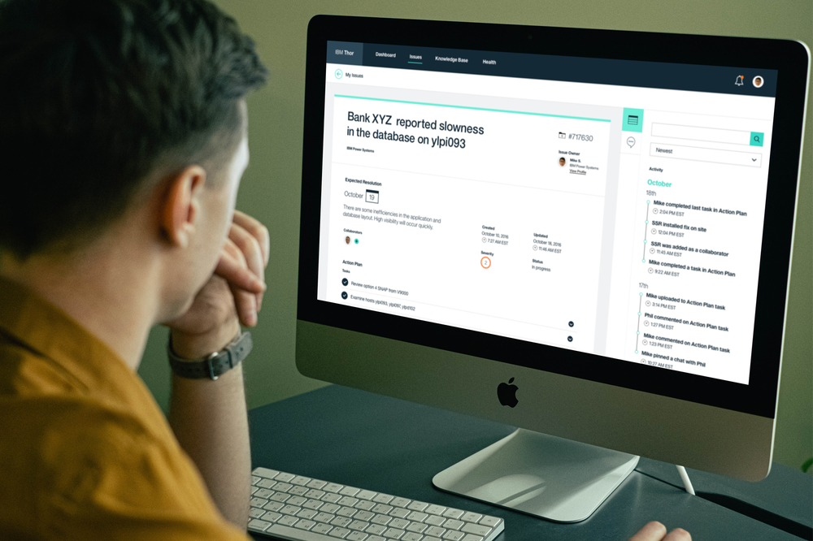
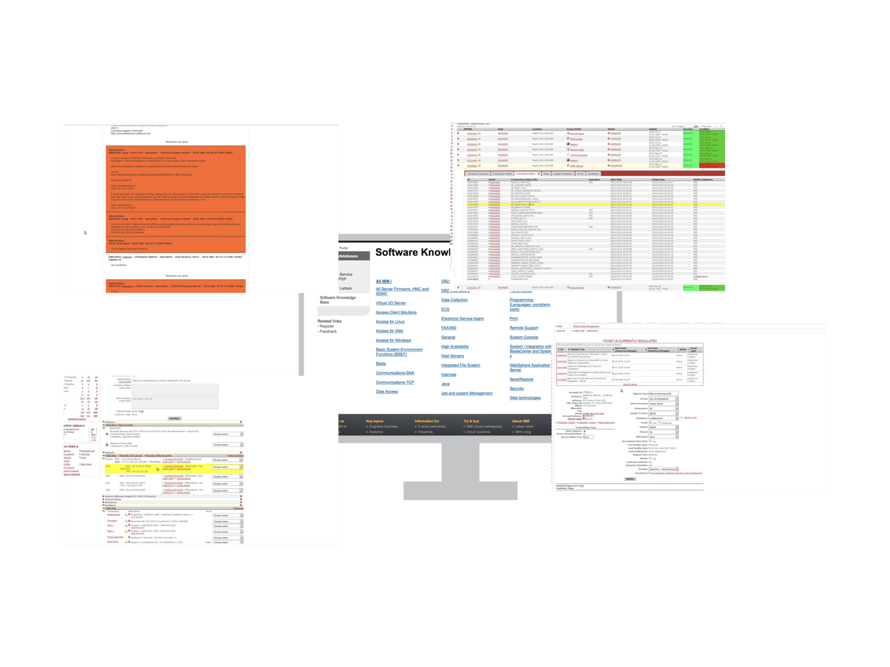
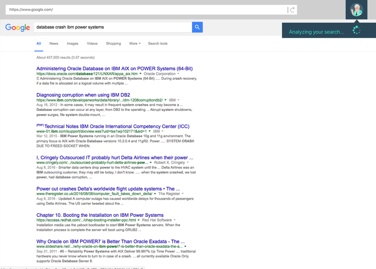
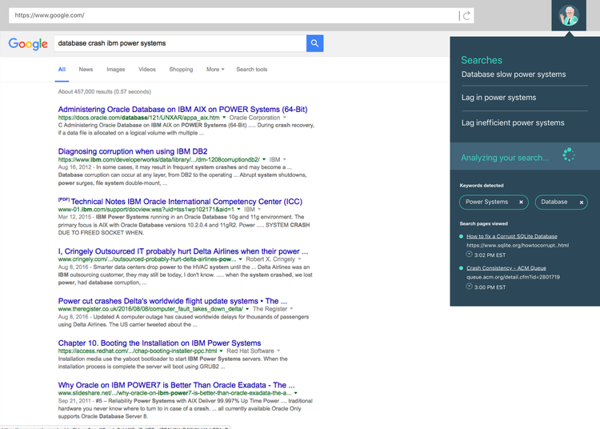
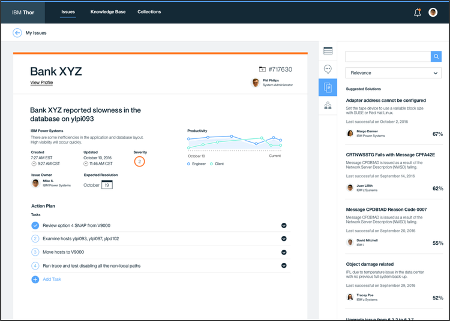
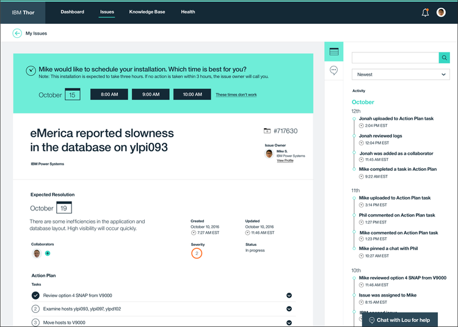
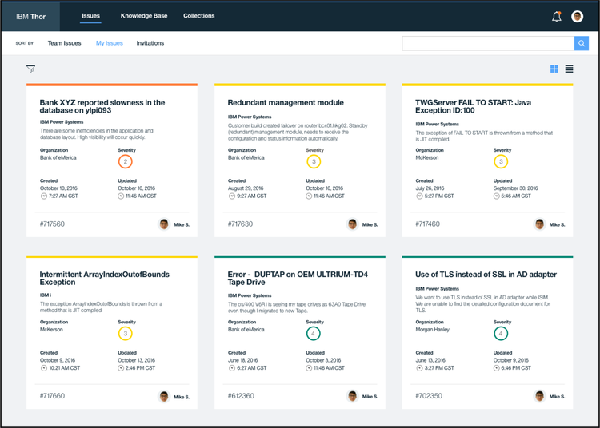
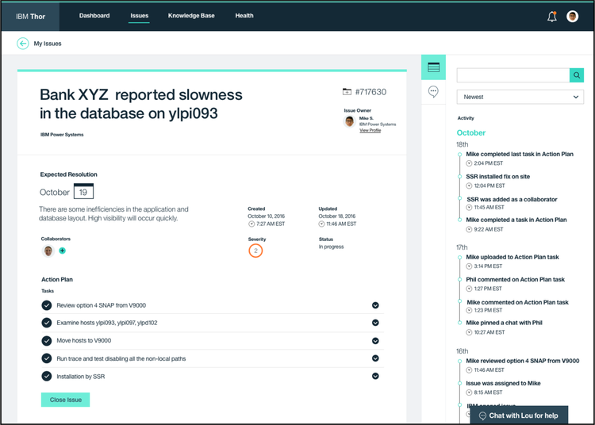
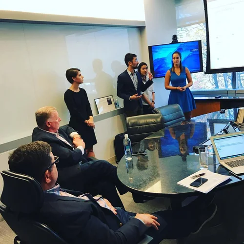

Overview
One IBM, seamless support
Project Thor looked at transforming customer support at IBM. A cohesive customer support experience is essential for IBM to be seen by customers as one seamless company — regardless of how many products they have with us. This project is as much a service design effort as it is a UX project, because it deals with the entire system of support: the customer-facing solution and the IBM support-facing solution.
Due to proprietary limitations and patent filing, all work shown is represented through high-level descriptions of interactions and interfaces.
My Role
Design lead, presenter to senior executives
My role on this team was design lead. My team and I were flown to IBM Corporate HQ in Armonk, NY to present this vision directly to senior executives — including the SVP of Transformation and the VP of Support.
Problem
A company of acquisitions with a fractured support ecosystem
IBM is a company of acquisitions. With each acquisition comes a unique support structure. With continued acquisitions, IBM's support ecosystem becomes heavily diluted. Project Thor attempts to break this paradigm and remake it with a consistent vision across the entire 4,000+ SKU portfolio.

Another large problem with support is that it is disparate and hard to navigate. Customers use third-party help to find their answers, and when they do reach IBM support, it is often fragmented — leaving customers with a deeply inconsistent experience.
"A lot of times you have to explain who you are, what the deal was, and that we need a fix now."
— IBM Customer
Vision
All clients view IBM as one company
The vision: all clients experience IBM as one company — support that is consistent and meaningful across all products and channels. There is also a significant trend showing that the new generation of consumers will not tolerate poor customer service. For IBM to thrive in the coming years, supportability needs to be front and center as a core value.
Baby-boomers
27%
would switch as a result of poor customer service
Millennials
62%
would switch as a result of poor customer service
Research
As-is journey: the customer
We found that the process for getting help is frustrating and long-winded. Once self-help fails, user-facing support is a series of fragmented escalations to parties that don't communicate with one another. An associate developer quickly has to escalate to their system administrator and in some cases to their operations manager. Nobody leaves happy.

Research
As-is journey: the service agent
When looking at the experience for IBM's customer service agents, we found a lack of communication whenever an issue is handed off between agents. In many cases, customers had to restate their credentials repeatedly. There was also the problem of routing customers to the correct service tier the first time. All of this escalation is time-consuming and leaves both the service agent and customer frustrated.

Opportunity
Instill IBM's clients with the trust that IBM support will deliver a seamless experience throughout their entire journey.
Solution — Customer Facing
Knowing where you are in the experience
The customer-facing solution focused heavily on giving customers visibility into where they are in the support experience — especially for highly technical tickets or customers with multiple tickets open simultaneously. This experience also leverages IBM's cognitive capabilities to answer customer issues or route them to the appropriate service agent.


Leveraging Cognitive
Using Watson to lower call volume
One major component of the customer-facing solution leverages the power of Watson to sit in the background of a browser, analyze the customer's situation, and provide answers to their problem in real time. Because Watson is constantly learning and growing its knowledge, the only time a customer would need to call IBM is if their issue is unique and has never occurred before.


Solution — Service Agent Facing
Eliminating the information gap between handoffs
A major pain point our solution solves is communication between service agents and their customers. The cognitive technology working behind the scenes allows agents to only interface with customers when they are the correct agent for the job — dramatically saving time for both parties.
Our solution also addresses keeping information consistent between agents so that when a handoff occurs, the new agent picks up exactly where the previous one left off — leaving a seamless experience for the customer.




Team
Leading a talented team
The work above is a very small sampling of an enormous project produced by an amazing team of incredibly hard-working and talented individuals. I am incredibly grateful to the IBM Design Incubator program for extending me the opportunity to take on such responsibility.
